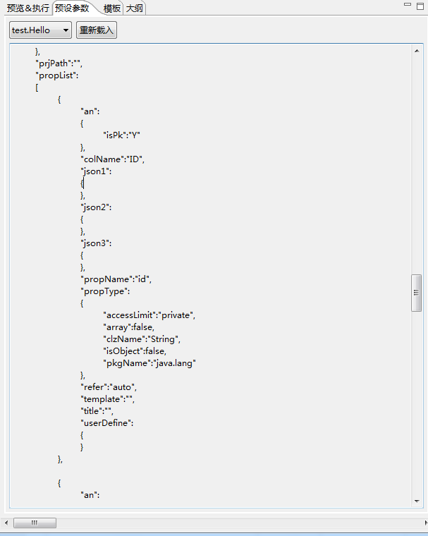

预设参数:
预设参数由插件自动解析.java文件而得来.包含java文件自身定义的属性,也包含用户特定注入的注释(怎样快速添加注释,见注释章节).
预设参数是个json对象，读取该对象时以sys为前缀，json里面的值是可以话的，以下是几个常用到的对象：
1、【sys.propList】所有类的属性数组。

如下代码遍历出类的所有的属性名
<#list sys.propList as p> ${p_index+1}、${p.propName} </#list>
2、【sys.clzSourceCode】java文件源代码路径
在java文件所在源文件夹下生成一个Test.txt的文件。
<ftl_file path="${sys.clzSourceCode}/Test.txt">测试内容</ftl_file>